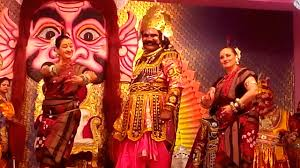

>/a>
>/a>Regional festivals are 3-day gatherings of puppeteers, offering performances, workshops, shared creativity and friendship – the perfect opportunity to meet puppeteers in your area of the country. Regional festivals are like national festivals, but with less of a commitment of time and finances.A festival is a special occasion of feasting or celebration, usually with a religious focus. Aside from religion, and sometimes folklore, another significant origin is agricultural. Food (and consequently agriculture) is so vital that many festivals are associated with harvest time.
|
 | >/a> |